Adaptive swing S15
Abstract
A young girl, age 3, is non-ambulatory and therefore needs a specialized adaptive swing to allow her to swing like other children without posing a problem to her condition. In order to help, the team will design, build, and deliver such swing to the family for their use. The swing will allow the girl to swing in multiple positions while providing her with the structural support she needs. It will mount to a ceiling in the child's home to allow her mother to work on household chores or other tasks without worry of her child falling out of the swing. After proposing initial designs, the team will select the best candidate according to functionality, safety, and practicality. The team will then order the parts and construct the final product before delivering it to the family.
Team members
- Amy Fricks
- Caleb Smith
- Jonathan Ellis
- Tyler Hunt
- Miranda McConnell
Problem Statement/overview of the need
- A young girl, age 3, is non-ambulatory and therefore needs a specialized adaptive swing to allow her to swing like other children without posing a problem to her condition.
- The swing will allow the girl to swing in multiple positions while providing her with the structural support she needs.
- It will mount to a ceiling in the child's home to allow her mother to work on household chores or other tasks without worry of her child falling out of the swing.
- The swing will need to provide a head support and recline to allow the child to nap in the swing.
- A harness will be installed to ensure the child's safety.
Design Specifications
Child Specifics
- The girl is 3 years old, so the swing should be appropriate for such an age.
- Weight and height average for a girl 3 years of age: 30-35 pounds and 37" tall.
Seat
- The seat must be adjustable from a seated swinging position to a reclined napping position.
- There must be a head rest for the girl to support her neck.
- Since she has fragile bones, a restraint must be installed.
Mobility
- The swing should be able to swing in multiple directions.
- An adjustable attachment to the frame will allow such degrees of freedom.
Fixture
- The seat will mount to the ceiling permanently so that it will not have to be moved around or have the possibility of tipping over.
Cushion
- A padded cloth cushion will be added with fun print to ensure comfort and happiness.
Background research
Typical Toddler Swing
- Companies such as Fisher-Price, Graco, and Little Tikes already market swings for toddlers.
- They typically include hard plastic seats with backs and hard plastic restraints that are placed between the legs.
- Most swings for children aged 3 are for outdoor use and have attachments for swingsets.
- This seat does not recline and probably won't be comfortable to sleep in.
Typical Baby Swing
- A baby swing will be a more appropriate example of what our customer needs.
- She needs the support and comfort they offer, plus an option to recline.
- Most baby swings include motors and stand on their own support system.
- These swings are too small for the customer and need to be modified.
- Baby swings offer a great example of the restraints needed for the customer.
- They are better suited for indoor use.
Net Swing
- Great example of the freedom of seat reclining needed.
- Full freedom of rotation.
- Current support system too bulky.
Conceptual Design
All Concepts Should Include the Following:
- a harness with leg restraints and headrest to prevent rolling during napping.
- a comfortable head support with cushion
- ability to adjust from sitting to lying position
- mother requested 2-directional swinging ability
Design Concept 1
- The swing will be on a rigid frame that will attach permanently to the ceiling so as not to be moved.
- It will have the freedom to rotate 360 degrees.
Design Concept 2
- The swing will be motor controlled so that the mother will not have to push the child.
- The swing will be supported on its own freestanding rigid frame.
Design Concept 3
- The swing will have its own rigid support frame so that it can be moved.
- Wheels will be attached to the bottom with a locking system so it cannot roll when positioned.
Evaluate concepts/select candidate
- Design concept 2 won the decision matrix, mostly due to its controlled motion. The mother of the child would benefit more from this function, which would allow her to do household chores in other areas of the family's home without worrying about constantly having to push the child. The only category that another design succeeded in was freedom of degrees of rotation, but the group feels that a stronger support system is more important due to the child's fragile nature, which we would not be able to supply had we chosen to allow full rotation, as the support system would get in the way.
- The following are rough sketches of design 2, with final decisions and dimensions to come.
Detailed Design
Description of selected design
Our design will feature a two legs serving as a base for support with two bracing arms on each side. The frame will come together at the top and connect to the motor and swing pivot. The seat will be suspended from the swing pivot. The legs will be made of steel piping and the swivel at the top which attaches to the seat will be plastic with a metal rod. The seat itself will be foam and will be suspended from the swivel via a metal bracket.
Detailed description of selected design
Analysis
- Analysis 1 was conducted in Autodesk and calculated the strain on the assembly when a 75 pound load was added.
- Analysis 2 was conducted in SolidWorks to calculate the weight that the plastic end could withstand.
- Analysis 3 was conducted by hand on the motor from the Graco baby swing to get the velocity analysis.
Engineering analysis 1
Goal: find out if the pipes are strong enough to withstand a load of 75 lb placed on the end of the frame without serious bending.
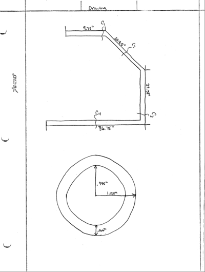
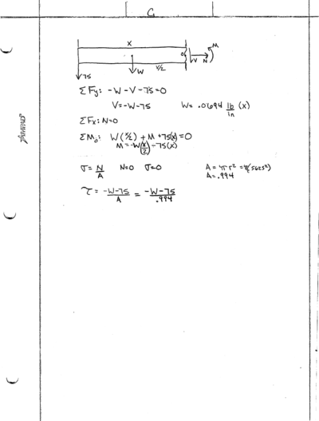
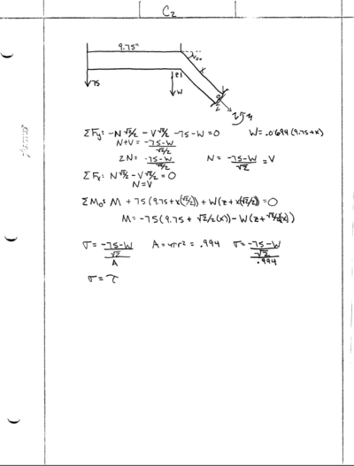
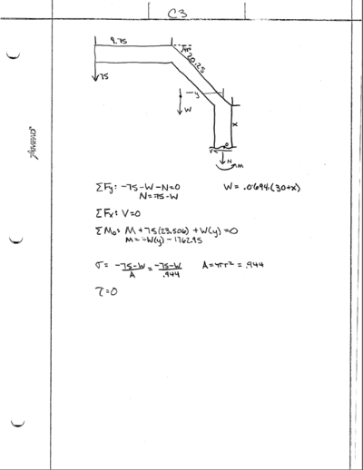
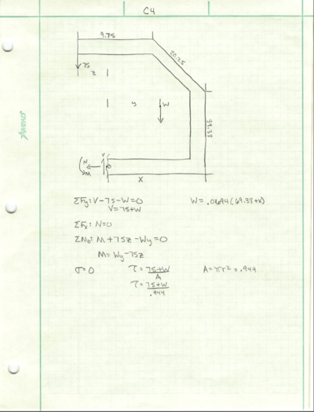
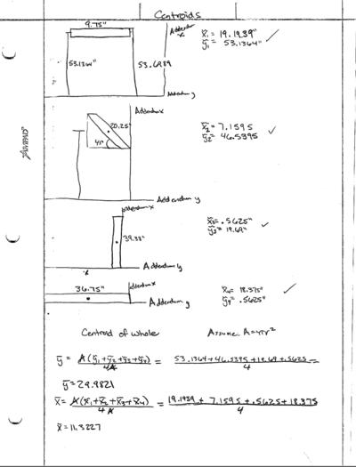
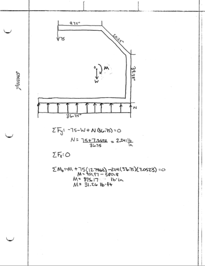
Conclusion: Upon placing a 75 pound load on the end of the frame, it will have a maximum deflection of .1166 inches. Also, we discovered the pipes will first break at the weld closest to the ground at 5.4 ksi.
Engineering analysis 2
Goal: Determine if the already made plastic piece from previous baby swing will be strong enough to withstand a 75 pound load.


Conclusion:The maximum deflection will be .0965 inches when a 75 pound load is applied, making virtually no difference. The applied load this rig will be subjected to is still smaller than the tensile strength of the material, proving it's safe for the child's use without breaking.
Engineering analysis 3
CAD Drawings
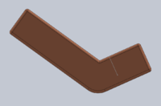 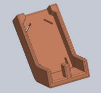 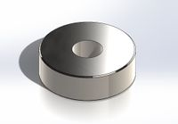 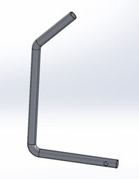 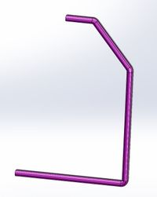 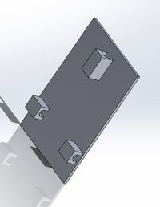 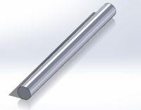 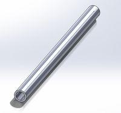 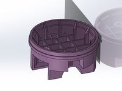 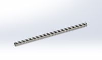 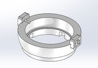 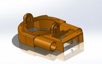
3D Printed Drawings

Bill of Materials


Assembly Instructions
Buckle in the child, making sure the straps are secure.
Fabrication Process
Testing and implementation
Describe testing, delivery, how used/received by the family
Photos of Completed design
Insert pictures of the final product
Instructions for safe use
Make sure the child is completely strapped into seat before engaging motion. Also ensure that the swing is placed on level ground to avoid unwanted rocking motion. The child should be supervised at all times so that he or she does not unbuckle his or herself and fall.